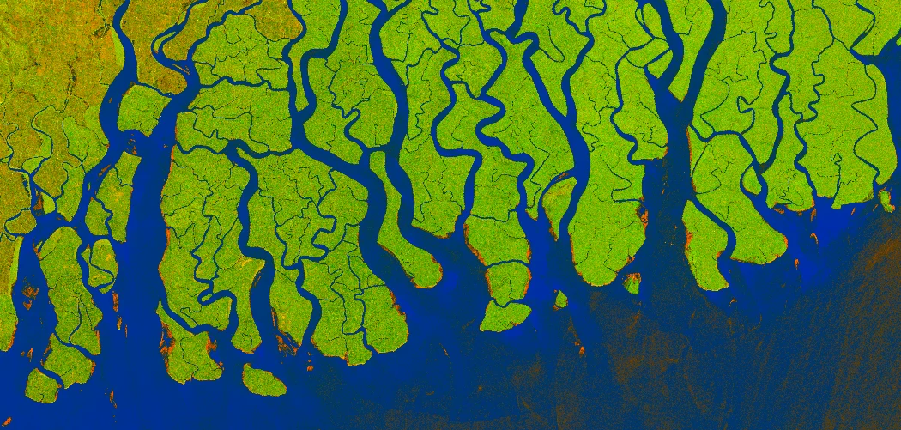

Dónde consultar lo que producimos y las líneas en las que trabaja el semillero.
Trabajos de grado, resultados de proyectos y recursos académicos de la Universidad Distrital, junto con las ponencias y talleres del semillero.

Radar Sentinel-1, delta del Ganges (2019) · Copernicus Sentinel / Sentinel Hub, CC BY-SA 4.0Procesamiento de imágenes pasivas y activas de percepción remota, y análisis avanzado de firmas espectrales para el monitoreo territorial.
Modelos de inteligencia artificial para modelado territorial, evaluación de riesgos y detección de cambios en la superficie terrestre.
Estandarización e interoperabilidad de información geoespacial (ráster, LiDAR, LADM_COL) para su integración en plataformas territoriales.
Estructuración de cartografía para la gestión de recursos naturales, catastro multipropósito y planificación del territorio.